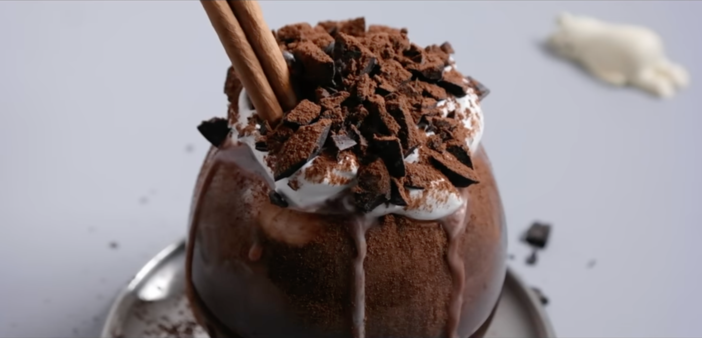

Italian Hot Chocolate Recipe

Description
The best sweet and thick anti-fatigue drink. Unlike regular hot chocolate sold in the market, Italian hot chocolate is a very thick chocolate drink with the thickness of a syrup.
Ingredients
- 1 tablespoon starch
- 2 tablespoons cocoa powder
- 350ml of milk
- pinch of salt
- 1 tablespoon sugar
- 1/2 cup dark chocolate (100g)
- chocolate for topping
- 1/2 cup whipped cream for topping
Steps
- Put all powdered products in a bowl.
- Mix while slowly adding milk.
- Pour the mixture into a pot and bring to a boil over low heat.
- When the mixture is slightly warm, add chocolate and mix till it thickens.
- Pour the hot chocolate into a nice mug.
- Put the whipped cream on top.
- Sprinkle some cocoa powder and chopped up chocolate on top.
- Enjoy! :)